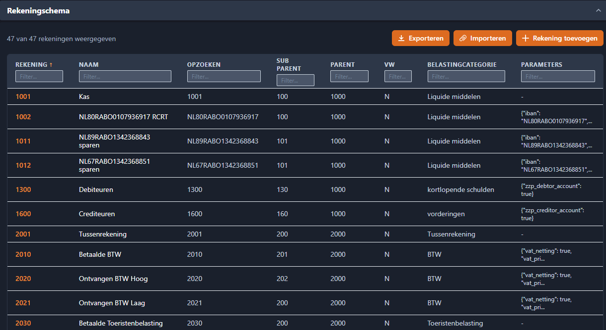
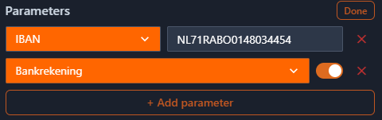
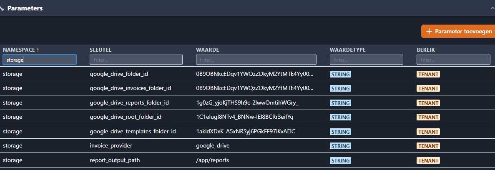
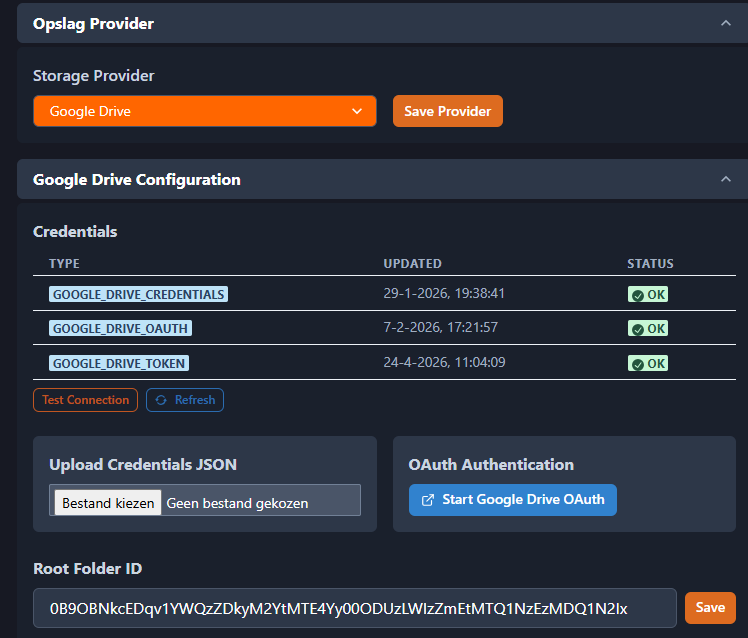

Instellingen¶
Beheer je organisatie via 7 overzichtelijke tabbladen.
Overzicht¶
Het Tenant Beheer dashboard is opgebouwd uit 7 tabbladen. Welke tabbladen je ziet hangt af van je modules en rol.
| Tabblad | Inhoud | Zichtbaar voor |
|---|---|---|
| Gebruikers | Gebruikers toevoegen, rollen toewijzen | Tenant Admin |
| Financieel | Rekeningschema + Belastingtarieven | Tenant Admin (FIN) |
| Opslag | Opslagprovider kiezen, Google Drive credentials & mappen | Tenant Admin |
| Sjablonen | Rapportagesjablonen uploaden, bewerken en goedkeuren | Tenant Admin |
| Tenantinfo | Bedrijfsgegevens, contactinfo, bankgegevens + E-maillog | Tenant Admin |
| Factuur E-mail | E-mailadres verificatie voor factuurverzending | Tenant Admin |
| Geavanceerd | Ruwe parameters tabel | Alleen SysAdmin |
Financieel tabblad¶
Het Financieel tabblad (alleen zichtbaar als de FIN-module actief is) bevat twee secties:
Rekeningschema¶
Het rekeningschema bevat alle grootboekrekeningen voor je administratie. Het standaard rekeningschema dat met het systeem wordt meegeleverd is een voorbeeldmodel — het staat niet vast. Je kunt en moet het aanpassen aan je eigen administratiebehoeften.

Rekeningschema aanpassen¶
Je kunt het rekeningschema op drie manieren wijzigen:
- Toevoegen — Maak direct een nieuwe rekening aan in de applicatie
- Bewerken — Klik op een rij om de rekeninggegevens te bewerken
- Exporteren / Importeren — Download het huidige model als Excel, pas het aan en upload het opnieuw
Exporteren en importeren (Excel)¶
De aanbevolen werkwijze voor bulkwijzigingen:
- Klik op Exporteren om het huidige rekeningschema als Excel-bestand te downloaden
- Open het bestand en maak je wijzigingen (rijen toevoegen, rekeningen hernoemen, categorieën aanpassen)
- Klik op Importeren om het gewijzigde bestand te uploaden
Kolomstructuur moet ongewijzigd blijven
Het Excel-bestand moet exact deze kolommen bevatten in deze volgorde:
| Kolom | Beschrijving | Verplicht |
|-------|-------------|-----------|
| `Account` | Rekeningnummer (bijv. 1000, 4100) | Ja |
| `AccountName` | Weergavenaam van de rekening | Ja |
| `AccountLookup` | Opzoekcode of IBAN voor bankrekeningen | Nee |
| `SubParent` | Subcategorie groepering | Nee |
| `Parent` | Bovenliggende categorie groepering | Nee |
| `VW` | Winst & Verlies classificatie | Nee |
| `Belastingaangifte` | Belastingaangifte categorie (bijv. Activa, Passiva) | Nee |
| `Pattern` | Zet op `1` voor bankrekeningen, `0` voor overige | Nee |
Hernoem, verplaats of verwijder geen kolommen — de import mislukt als de structuur niet overeenkomt.
Grootboekrekening parameters¶
Elke rekening kan aanvullende parameters hebben die bepalen hoe deze zich in het systeem gedraagt. Klik op een rij en gebruik de Parameters knop om deze instellingen te bekijken en bewerken:
| Parameter | Beschrijving |
|---|---|
bank_account |
Markeert deze rekening als bankrekening (bronrekening voor afschriftimport) |
iban |
Het IBAN of bankrekeningnummer dat bij deze rekening hoort |
purpose |
Speciaal doel (bijv. BTW saldering, jaarafsluiting) |
Je kunt parameters ook als ruwe JSON bewerken via de sleutel-waarde editor in het rekeningdetailscherm.

Belangrijk: Bankrekening configuratie voor bankimport¶
Vereist voor het importeren van bankafschriften
Om de bankimport correct te laten werken, moet je rekeningschema minstens één rekening als bankrekening geconfigureerd hebben:
- **`bank_account`** moet op `true` staan (of `Pattern = 1` in het Excel-bestand)
- **`iban`** moet het werkelijke bankrekeningnummer bevatten (bijv. `NL91ABNA0417164300`)
Zonder deze twee velden correct ingesteld, worden geïmporteerde bankafschriften niet aan de juiste bronrekening gekoppeld. Als je meerdere bankrekeningen hebt, heeft elke rekening een eigen grootboekrekening met het juiste IBAN nodig.
Referentienummers¶
Referentienummers (ref1) dienen als labels om details binnen een grootboekrekening te volgen en om transacties tussen grootboekrekeningen te koppelen. Bijvoorbeeld:
- Een geïmporteerde factuur wordt geboekt op een crediteurenrekening met een referentienummer
- Wanneer de factuur betaald wordt, wordt de banktransactie ook op dezelfde crediteurenrekening geboekt met hetzelfde referentienummer
- Dit koppelt de twee transacties aan elkaar, zodat je eenvoudig kunt zien welke facturen betaald zijn
Hetzelfde principe geldt voor debiteurenrekeningen bij uitgaande facturen: de verzonden factuur en de ontvangen betaling delen een referentienummer.
Rekeningen in gebruik¶
Info
Rekeningen die al in transacties worden gebruikt, kunnen niet worden verwijderd. Als je het rekeningschema wilt herstructureren, maak dan eerst de nieuwe rekening aan, herboek de transacties en deactiveer daarna de oude rekening.
Belastingtarieven¶
Beheer BTW-tarieven en andere belastingtarieven. Klik op een rij om te bewerken. Systeemtarieven (bron: system) kunnen alleen door de SysAdmin worden gewijzigd.
Opslag tabblad¶
Configureer waar je bestanden (facturen, sjablonen, rapporten) worden opgeslagen. De opslagprovider bepaalt hoe myAdmin documenten opslaat en ophaalt.
Stap 1: Provider kiezen¶
Kies je opslagprovider uit het dropdown-menu:

| Provider | Beschrijving | Geschikt voor |
|---|---|---|
| Google Drive | Bestanden opgeslagen in je eigen Google Drive account met OAuth-authenticatie | Organisaties die al Google Workspace gebruiken |
| S3 Shared Bucket | Bestanden opgeslagen in een gedeelde AWS S3 bucket beheerd door het platform | Standaardoptie, geen configuratie nodig |
| S3 Tenant Bucket | Bestanden opgeslagen in een eigen AWS S3 bucket voor je organisatie | Organisaties die volledige data-isolatie nodig hebben |
Stap 2: Provider configureren¶
Google Drive:
- Credentials uploaden — Upload je Google service account credentials JSON-bestand, of klik op Start OAuth om via je browser te authenticeren
- Verbinding testen — Klik op Test Connection om te controleren of de credentials werken. Een groen vinkje bevestigt dat de verbinding actief is
- Root Folder ID invoeren — Dit is het Google Drive map-ID waar myAdmin zijn mappenstructuur aanmaakt. Je vindt dit in de URL wanneer je de map opent in Google Drive (de lange tekenreeks na
/folders/) - Mapconfiguratie bekijken — myAdmin gebruikt submappen voor verschillende documenttypen:

- Facturen map — Waar geüploade en verwerkte facturen worden opgeslagen - Sjablonen map — Waar rapport- en factuursjablonen worden opgeslagen - Rapporten map — Waar gegenereerde rapporten worden bewaardTip
Als de mappen nog niet bestaan, maakt myAdmin ze automatisch aan onder de hoofdmap wanneer je de betreffende functie voor het eerst gebruikt.
S3 Shared Bucket:
Geen aanvullende configuratie nodig. De platformbeheerder heeft de gedeelde bucket al ingericht. Je bestanden worden opgeslagen in een tenant-specifiek prefix binnen de gedeelde bucket.
S3 Tenant Bucket:
Neem contact op met je SysAdmin om een eigen S3 bucket voor je organisatie in te richten. Na configuratie vul je de bucketnaam in bij de instellingen.
Hoe parameters werken¶
De instellingen die je op dit tabblad (en op het Financieel tabblad) configureert, worden opgeslagen als parameters — configuratiewaarden die bepalen hoe myAdmin zich gedraagt voor je organisatie.
- Parameters worden vooraf geconfigureerd met verstandige standaardwaarden wanneer je modules worden geactiveerd
- Je past ze aan via de gestructureerde instellingstabbladen (Opslag, Financieel, etc.)
- Sommige parameters (zoals huisstijl instellingen) beïnvloeden hoe facturen en documenten eruitzien
- Sommige parameters (zoals veldconfiguraties) bepalen welke velden zichtbaar of verplicht zijn in formulieren
- Wijzigingen worden direct doorgevoerd — geen herstart nodig
Factuur E-mail tabblad¶
Configureer het e-mailadres waarmee facturen worden verstuurd. Wanneer je e-mailadres is geverifieerd, worden facturen verstuurd vanuit jouw eigen adres in plaats van het standaard systeemadres.
Hoe het werkt¶
Bij het aanmaken van je tenant wordt automatisch een verificatie-e-mail gestuurd naar je contact-e-mailadres via AWS SES. Zodra je de verificatie bevestigt, worden alle factuur-e-mails verstuurd vanuit jouw eigen adres met je bedrijfsnaam als afzender.
Status overzicht¶
Het tabblad toont je huidige afzender-e-mailadres met een statusbadge:
| Status | Kleur | Betekenis |
|---|---|---|
| Geverifieerd | Groen | Je e-mail is bevestigd — facturen worden vanuit jouw adres verstuurd |
| In afwachting | Geel | Verificatie-e-mail is verstuurd — controleer je inbox |
| Mislukt | Rood | Verificatie is mislukt — probeer opnieuw te versturen |
| Verlopen | Oranje | Verificatie is verlopen — verstuur opnieuw |
Verificatie opnieuw versturen¶
Als je de verificatie-e-mail niet hebt ontvangen of als deze is verlopen:
- Klik op Verificatie opnieuw versturen
- Controleer je inbox (en spammap) voor de AWS SES verificatie-e-mail
- Klik op de bevestigingslink in de e-mail
Info
Je kunt maximaal één keer per 60 seconden opnieuw versturen. De knop toont een afteltimer.
E-mailadres wijzigen¶
Je kunt een ander e-mailadres instellen als factuurafzender:
- Vul het nieuwe e-mailadres in bij E-mailadres bijwerken
- Klik op E-mail bijwerken
- Er wordt een nieuwe verificatie-e-mail gestuurd naar het nieuwe adres
- Totdat het nieuwe adres is geverifieerd, worden facturen verstuurd vanuit het systeemadres
Terugval naar systeemadres¶
Wanneer je e-mail niet is geverifieerd, worden facturen verstuurd vanuit het standaard systeemadres (myAdmin <support@jabaki.nl>). Het Reply-To adres wordt ingesteld op jouw e-mailadres, zodat antwoorden van klanten bij jou terechtkomen.
E-mail handtekening¶
Factuur-e-mails bevatten automatisch een professionele handtekening met:
- Je bedrijfsnaam
- Je contact-e-mailadres
- Je bedrijfslogo (indien geconfigureerd)
- Een taalafhankelijke afsluiting ("Met vriendelijke groet," voor Nederlands)
Geavanceerd tabblad¶
Alleen SysAdmin
Dit tabblad is alleen zichtbaar voor gebruikers met de SysAdmin-rol. Tenant Admins zien dit tabblad niet.
Het Geavanceerd tabblad toont de ruwe parametertabel — alle configuratieparameters voor je tenant in hun oorspronkelijke sleutel-waarde vorm. Dit is handig voor geavanceerde configuratie en probleemoplossing.
Parameters bekijken¶
De tabel toont alle parameters met de volgende kolommen:
| Kolom | Beschrijving |
|---|---|
| Namespace | Logische groepering (bijv. ui.pivot, storage, zzp) |
| Key | Parameternaam binnen de namespace |
| Value | Huidige waarde (geheime waarden worden gemaskeerd als ********) |
| Value Type | Datatype: string, number, boolean of json |
| Scope | system default (standaardwaarde) of tenant override (aangepaste waarde) |
Klik op een kolom om te sorteren. Typ in het filterveld onder een kolomkop om te filteren.
Parameter bewerken¶
Klik op een rij om de parameter te openen. Wat je kunt doen hangt af van het type parameter:
Systeemparameters (scope: system default) openen in alleen-lezen modus:
- Alle velden zijn uitgeschakeld
- Klik op Aanpassen om een tenant-specifieke kopie aan te maken met dezelfde waarde
- Na het aanpassen kun je de kopie bewerken via de tabel
Tenant-parameters (scope: tenant override) openen in bewerkingsmodus:
- Pas de waarde aan en klik op Opslaan
- Voor JSON-parameters: het systeem valideert de JSON bij elke wijziging en toont een foutmelding als de JSON ongeldig is. De Opslaan-knop is uitgeschakeld zolang de JSON ongeldig is
- Gebruik de Format-knop naast JSON-velden om de JSON automatisch op te maken met inspringen
Terugzetten naar standaard¶
Wanneer je een tenant-parameter opent die een standaardwaarde heeft (afkomstig uit de systeemconfiguratie), verschijnt de knop Terugzetten naar standaard:
- Klik op Terugzetten naar standaard
- Een bevestigingsvenster toont je huidige waarde naast de standaardwaarde, zodat je de impact kunt beoordelen
- Klik op Terugzetten naar standaard om te bevestigen, of Annuleren om terug te keren
Na het terugzetten wordt de tenant-specifieke waarde verwijderd en valt de parameter terug op de standaardwaarde.
Tip
Terugzetten is niet destructief — je kunt de parameter altijd opnieuw aanpassen via de Aanpassen-knop.
Parameter verwijderen¶
Wanneer een tenant-parameter geen standaardwaarde heeft, verschijnt in plaats van "Terugzetten naar standaard" een Verwijderen-knop. Dit verwijdert de parameter permanent.
Sjablonen tabblad¶
Sjablonen bepalen hoe factuurverwerking en rapportages eruitzien. Op dit tabblad kun je:
- Standaardsjabloon downloaden — Download het ingebouwde sjabloon als startpunt voor aanpassingen
- Sjabloon uploaden — Upload een eigen HTML-sjabloon
- Sjabloon bewerken — Laad een bestaand sjabloon, bewerk het en upload opnieuw
- Sjabloon verwijderen — Verwijder je tenant-specifieke sjabloon en val terug op het standaardsjabloon
- Valideren en goedkeuren — Controleer op fouten en activeer het sjabloon
Bij validatiefouten kun je AI Help gebruiken voor suggesties.
Zie Sjabloonbeheer voor een uitgebreide handleiding.
Tenantinfo tabblad¶
Beheer je bedrijfsgegevens in de volgende secties:
- Bedrijfsinfo — Administratiecode, weergavenaam, status
- Contact — E-mail en telefoonnummer
- Adres — Straat, stad, postcode, land
- Bankgegevens — Rekeningnummer en banknaam
- E-maillog — Overzicht van verzonden e-mails (uitnodigingen, wachtwoord resets)
Problemen oplossen¶
| Probleem | Oorzaak | Oplossing |
|---|---|---|
| "Tenant admin access required" | Je hebt niet de Tenant_Admin rol | Neem contact op met je SysAdmin |
| Financieel tabblad niet zichtbaar | FIN-module niet ingeschakeld | Vraag de SysAdmin om FIN in te schakelen |
| Geavanceerd tabblad niet zichtbaar | Je bent geen SysAdmin | Alleen SysAdmin ziet dit tabblad |
| Google Drive verbinding mislukt | Credentials verlopen of ongeldig | Upload nieuwe credentials of start OAuth flow |
| Rekening kan niet verwijderd worden | Rekening wordt gebruikt in transacties | De rekening is in gebruik |